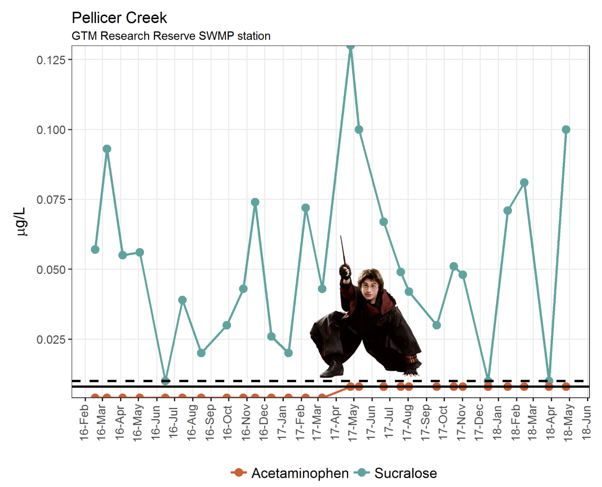

Jun 19, 2018
Software 📦
CRAN:  GitHub:
GitHub: 
New packages
- A new package
rppo(v1.0) is on CRAN.rppois an R interface to the Global Plant Phenology Data Portal at https://www.plantphenology.org/. See the rppo vignette to get started. rppo also just went through rOpenSci review - see the review at ropensci/onboarding#207.

Releases
- A new version (
v1.0.3) ofskimris on CRAN - a simple to use summary function that can be used with pipes and displays nicely in the console. See the skimr NEWS for changes. Check out the skimr vignettes to get started.
use
skim_with()` with a nested list of functions - A new version (
v0.2.2) oftabulizeris on CRAN. See the tabulizer NEWS for changes. Check out the tabulizer vignette to get started.
extract_tables()gets outdir argument - A new version (
v1.0.13) oflingtypologyis on CRAN - a package for linguistic cartography and typological databases search. See the lingtypology release notes for changes. Check out the lingtypology docs to get started.
account for leaflet updates, many new arguments
- A new version (
v0.2.1) ofbomrangis on CRAN - Australian Government Bureau of Meteorology Data From R. See the bomrang release notes for changes. Check out the bomrang docs to get started.
deprecated fxns gone, docs better
- A new version (
v0.2.4) ofgetCRUCLdatais on CRAN - explore CRU CL v. 2.0 Climatology Elements in R. See the getCRUCLdata release notes for changes. Check out the getCRUCLdata docs to get started.
docs better, minor bug
- A new version (
v1.2.1) ofGSODRis on CRAN - Global Summary Daily Weather Data in R. See the GSODR release notes for changes. Check out the GSODR docs to get started.
docs cleanup, cleanup internal station metadata, bug fixes
- A new version (
v0.3.0) ofnomisris on CRAN - access UK official statistics from the Nomis database. See the nomisr release notes for changes. Check out the nomisr docs to get started.
new function
nomis_codelist(), a deprecated arg in two functions - A new version (
v0.2.0) ofgeoopsis on CRAN - a package for doing spatial operations on GeoJSON. See the geoops release notes for changes. Check out the geoops vignette to get started.
updates the JSON C++ lib, add jsonlite to Suggests
- A new version (
v0.4.0) ofrdryadis on CRAN - an R client for Dryad. See the rdryad release notes for changes. Check out the rdryad README to get started.
new fxns dryad_metadata/dryad_package_dois, download_url defunct (use dryad_files)
Software Review ✔
We accept community contributed packages via our onboarding system - an open software review system, sorta like scholarly paper review, but way better. We’ll highlight newly onboarded packages here. A huge thanks to our reviewers, who do a lot of work reviewing (see the blog post on our review system), and the authors of the packages!
If you want to be a reviewer fill out this short form, and we’ll ping you when there’s a submission that fits in your area of expertise.
The following five packages were recently submitted:
- piggyback > Managing Larger Data on a GitHub Repository
- Author: Carl Boettiger
- Issue: ropensci/onboarding#220
- Reviewers:
- James Balamuta
- other unassigned
- epubr > Read EPUB File Metadata and Text
- Author: Matthew Leonawicz
- Issue: ropensci/onboarding#222
- Reviewers:
- xROI > Delineate Region of Interests (ROI’s) and Extract Time-Series Data from Digital Repeat Photography Images
- Author: Bijan Seyednasrollah
- Issue: ropensci/onboarding#223
- Reviewers: not assigned yet
- arkdb > Archive and Unarchive Databases Using Flat Files
- Author: Carl Boettiger
- Issue: ropensci/onboarding#224
- Reviewers:
- tiler > Create Geographic and Non-Geographic Map Tiles
- Author: Matthew Leonawicz
- Issue: ropensci/onboarding#226
- Reviewers: not assigned yet
On the blog
rOpenSci Unconference
A series of posts recaping our recent rOpenSci Unconference:
Stefanie Butland wrote a high level overview of the unconference, and included a wrap-up of blog posts about the event by the community: Exploring, experimenting, and building software and trust at rOpenSci’s unconf18
Our team wrote a series of four blog posts recapping the projects that happened at the unconference. Also check out Stefanie’s blog post for links to other blog posts about the event.
- Maëlle Salmon: Unconf18 projects 1: mchtoolbox, pkginspector, dataspice, rOpenSciEd, rOpenInterviews
- Karthik Ram: Unconf18 projects 2: middlechild, defender, ropsec, keybase
- Maëlle Salmon: Unconf18 projects 3: jobstatus, motifator, QcodeR, opencv, trackmd
- Scott Chamberlain: Unconf18 projects 4: umapr, greta, roomba, proxy-bias-vignette, http caching
.rprofile series
We have another post in our .rprofile series conducted by Kelly O’Briant - .rprofile: Julia Silge
Keep an eye out for more posts in this series.
Onboarding
Jorge Cimentada wrote a blog post (Exploring European attitudes and behaviours using the European Social Survey) introducing his recently onboarded package essurvey.
technotes
Jeroen Ooms wrote about The ssh Package: Secure Shell (SSH) Client for R - The taxize package has been around for seven years now. This post covers some of the noteable milestones and covers some upcoming changes.
library(ssh)
session <- ssh_connect("<your host>")
out <- ssh_exec_wait(session, command = 'whoami')
## jane
Use cases
The following six works use/cite rOpenSci software:
- Machado et al. wrote a paper citing rentrez: One thousand DNA barcodes of piranhas and pacus reveal geographic structure and unrecognised diversity in the Amazon 1
- Richmond in their thesis cited plotly: Evaluation of Craniofacial Superimposition as a Technique for Measuring Mountain Gorilla Facial Soft Tissue Depth and Implications for Hominid Facial Approximation 2
- Rastrojo et al. cited plotly in their paper Genomic and transcriptomic alterations in Leishmania donovani lines experimentally resistant to antileishmanial drugs 3
- Simchon & Gilead cited our [spelling][] and [hunspell][] packages in their conference paper A Psychologically Informed Approach to CLPsych Shared Task 2018 4
- Sun et al. cited rentrez and plotly in their paper Genomic atlas of the human plasma proteome 5
- Nousiainen et al. cited [RSelenium][] in their paper snpEnrichR: analyzing co-localization of SNPs and their proxies in genomic regions 6
In the news
Sam Albers ran a workshop recently Introduction to R and the tidyverse in Hydrology using the package he maintains that’s part of the rOpenSci suite: [tidyhydat][]

Matt Dray used our magick package for Animating Changes in Football Kits using R
⚽️👕Loving this use of the magick package in #rstats by @guyabelguyabel : Animating Changes in Football Kits using R https://t.co/oi1HAH37EZ
— Matt Dray (@mattdray) June 7, 2018
Torkild Lyngstad made an animated figure exploring data from our recently onboarded package essurvey
The relationship between years of education and generalized trust in European countries. Data directly from the @rOpenSci pkg for @ESS_Survey simply fed into ggplot and animated with gganimate. pic.twitter.com/oV2dex7aCF
— Torkild H. Lyngstad (@torkildl) June 7, 2018
Paul Oldham wrote a thorough guide to API Resources for the Scientific Literature in R and Python, including many rOpenSci R packages
A quick guide to APIs for searching publications in R or Python https://t.co/uz6GtLrHwU #rstats @Ropensci
— Paul Oldham #FBPE (@junglepaul) June 11, 2018
Shannon Dunnigan wrote about [magick]-ally adding images to figures using our magick package

Najko Jahn maintains an R Shiny web app called the Hybrid OA Journal Monitor that uses the rOpenSci package rcrossref
The #hybridoa journal monitor got a new section, which helps you to study the #openaccess share of more than 3.300 journals using data from @CrossrefOrg and @oa_intact , as well as #rstats / @ropensci tools.https://t.co/91bFx9quB9 pic.twitter.com/3Ja2hLfaaR
— Najko Jahn (@najkoja) June 11, 2018
Keep up with rOpenSci
- Mailing list: Sign up with an email address to get this newsletter sent to your inbox -> ropensci.org/#subscribe
- Alternatively, you can subscribe to this newsletter via our XML feed at https://news.ropensci.org/feed.xml or our JSON feed at https://news.ropensci.org/feed.json
- rOpenSci on Twitter: @ropensci
- The rOpenSci blog at ropensci.org/blog - you can subscribe in any RSS aggregator, or manually via https://ropensci.org/feed.xml. We also announce new blog posts on our Twitter account.
Footnotes
-
Machado, V. N., Collins, R. A., Ota, R. P., Andrade, M. C., Farias, I. P., & Hrbek, T. (2018). One thousand DNA barcodes of piranhas and pacus reveal geographic structure and unrecognised diversity in the Amazon. Scientific Reports, 8(1). https://doi.org/10.1038/s41598-018-26550-x ↩
-
Richmond, M. (2018). Evaluation of Craniofacial Superimposition as a Technique for Measuring Mountain Gorilla Facial Soft Tissue Depth and Implications for Hominid Facial Approximation (Masters dissertation, The George Washington University). https://search.proquest.com/openview/bea2b5bf21b62cb1e5e08b6a6e2354a3/1?pq-origsite=gscholar&cbl=18750&diss=y ↩
-
Rastrojo, A., García-Hernández, R., Vargas, P., Camacho, E., Corvo, L., Imamura, H., … Requena, J. M. (2018). Genomic and transcriptomic alterations in Leishmania donovani lines experimentally resistant to antileishmanial drugs. International Journal for Parasitology: Drugs and Drug Resistance, 8(2), 246–264. https://doi.org/10.1016/j.ijpddr.2018.04.002 ↩
-
Simchon, A., & Gilead, M. (2018). A Psychologically Informed Approach to CLPsych Shared Task 2018. In Proceedings of the Fifth Workshop on Computational Linguistics and Clinical Psychology: From Keyboard to Clinic (pp. 113-118). http://www.aclweb.org/anthology/W18-0612 ↩
-
Sun, B. B., Maranville, J. C., Peters, J. E., Stacey, D., Staley, J. R., Blackshaw, J., … Butterworth, A. S. (2018). Genomic atlas of the human plasma proteome. Nature, 558(7708), 73–79. https://doi.org/10.1038/s41586-018-0175-2 ↩
-
Nousiainen, K., Kanduri, K., Ricaño-Ponce, I., Wijmenga, C., Lahesmaa, R., Kumar, V., & Lähdesmäki, H. (2018). snpEnrichR: analyzing co-localization of SNPs and their proxies in genomic regions. Bioinformatics. https://doi.org/10.1093/bioinformatics/bty460 ↩